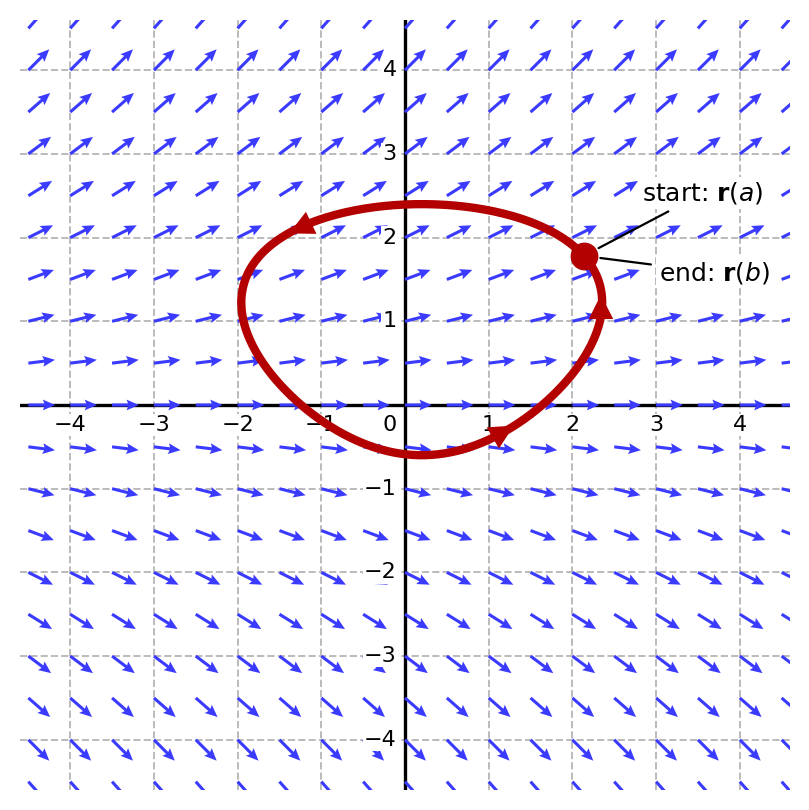

Lesson 41: The Fundamental Theorem of Line Integrals
Let \(C\) be a smooth curve given by \(\mathbf{r}(t)\) over the interval \(a \le t \le b\). Let \(\mathbf{F}\) be a conservative vector field with a continuously differentiable potential function \(f\). Then the work done by \(\mathbf{F}\) in moving a particle along \(C\) can be found from the potential function at the endpoints of \(C\).
The Fundamental Theorem of Line Integrals
Note: The work depends only on the values of the potential function at the endpoints, not on the path between them!
An Example
Let \(\mathbf{F}(x, y) = \langle 2xy, x^2 + 3y^2 \rangle\), and let \(C\) be the curve given by \(\mathbf{r}(t) = \langle t, t^2 \rangle\) over the interval \(0 \le t \le 2\).
- Set up and evaluate the line integral \(\displaystyle\int_C \mathbf{F} \dotp d\mathbf{r}\) directly.
- Verify your result by finding a potential function and using the Fundamental Theorem of Line Integrals.
Part (1)
Along the curve, \(x = t\) and \(y = t^2\).
Part (2): A potential function for this field, found on the previous page, is \(f(x, y) = x^2 y + y^3\). The endpoints of the curve are \(\mathbf{r}(0) = (0, 0)\) and \(\mathbf{r}(2) = (2, 4)\).
Both methods give 80.
The work done by a conservative vector field around a smooth closed curve is zero!

This is a special case of the Fundamental Theorem of Line Integrals. Recall that \(\mathbf{r}(a)\) is the starting point of the curve, and \(\mathbf{r}(b)\) is its end point. For a closed curve, the starting and end points are the same: \(\mathbf{r}(b) = \mathbf{r}(a)\). So the work around a closed curve is: